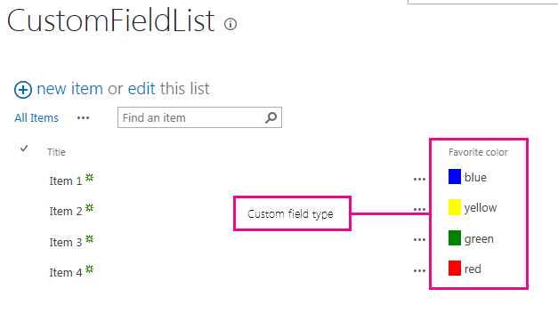

This sample demonstrates how to customize the rendering process for a custom field type in SharePoint 2013 . You can provide custom logic to control the rendering process of the field when it is displayed in the View, Edit, New, and Display forms.
The JavaScript code that controls the rendering process is in the CSRFieldType.js file.
Figure 1 shows the custom field in the View form.
Figure 1. Custom client-side rendered field in a View form

This sample requires the following:
The sample contains the following:
The following table lists common configuration and environment errors that prevent the sample from running or deploying properly and how to solve them.
| Problem | Solution |
|---|---|
| Field type FavoriteColorField is not installed properly. Go to the list settings page to delete this field. | Execute the following command from an elevated command prompt:
iisreset /noforce. ! Caution If you are deploying the solution to a production environment, wait for an appropriate time to reset the web server using iisreset /noforce. |
First version: July 16, 2012